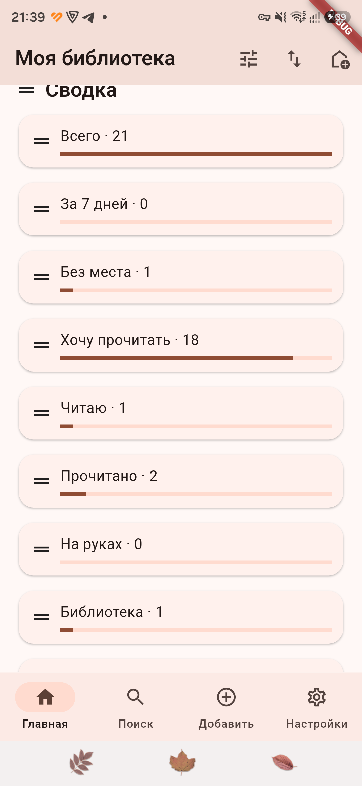
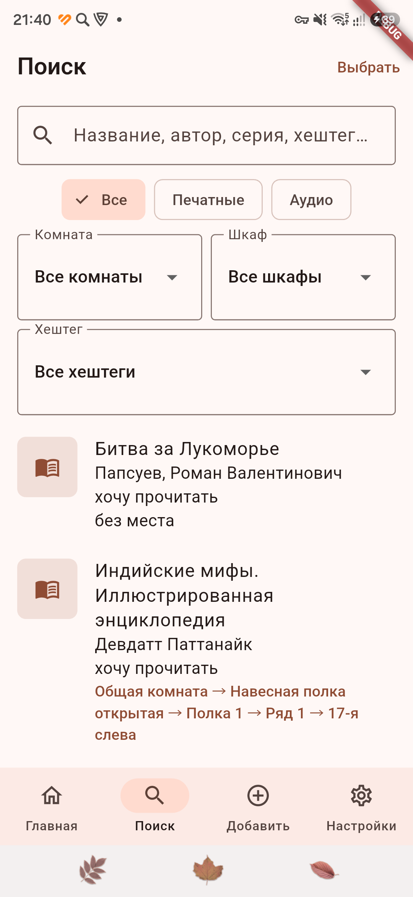
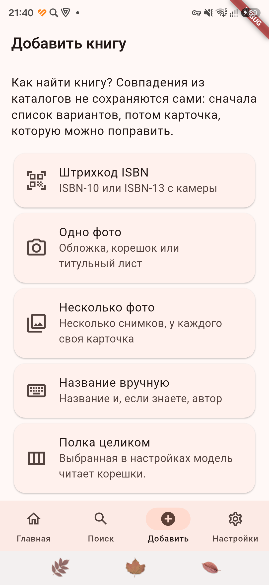
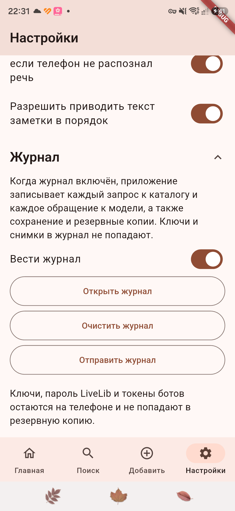
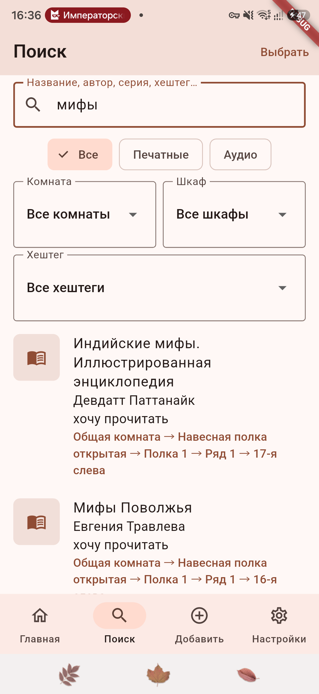
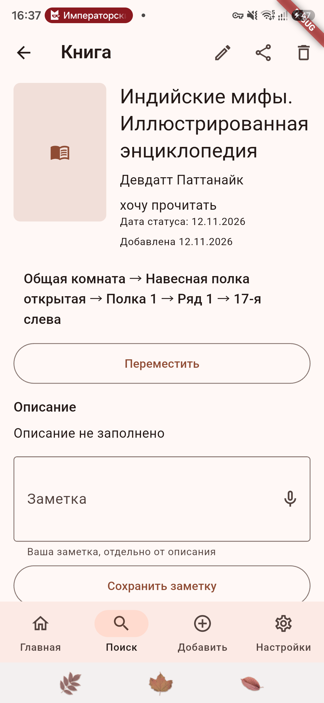
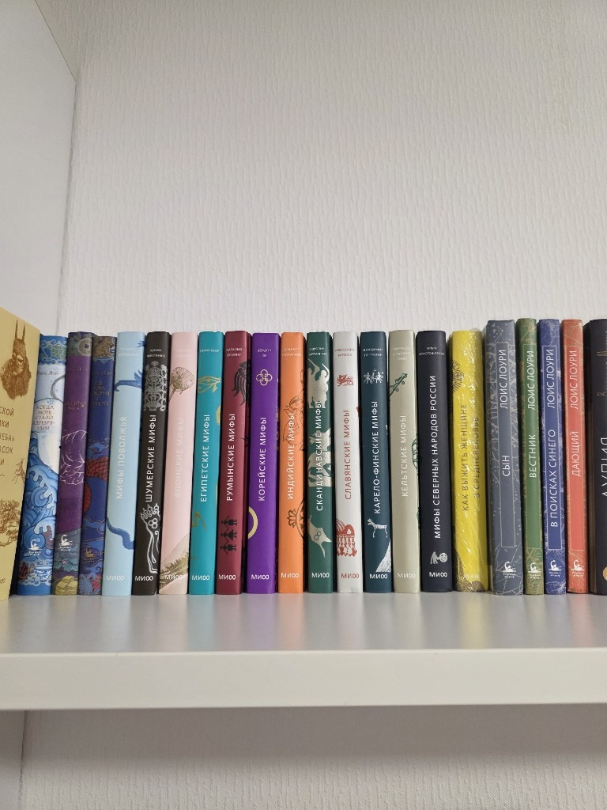
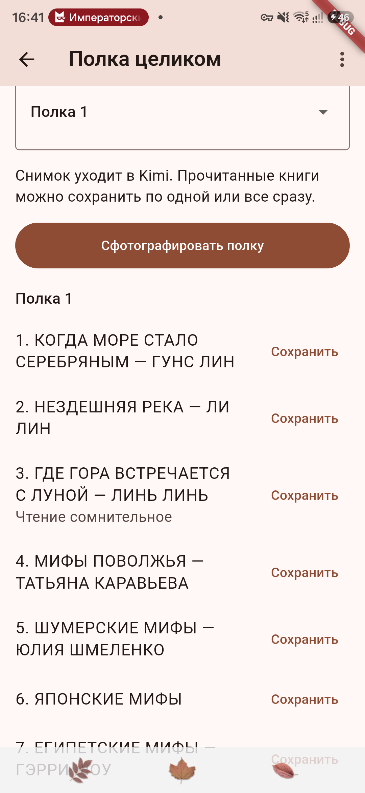

Для кого
Для человека, у которого дома уже много книг и который перестаёт помнить, в каком шкафу какая стоит. Отдельный случай — книга ушла в библиотеку или кому-то на руки, и о сроке легко забыть.
Локальное приложение для телефона
Каталог бумажных книг, который живёт на телефоне. Книгу можно найти по месту на полке и добавить по ISBN, фото или снимку полки целиком, не набирая каждый корешок руками.
Для человека, у которого дома уже много книг и который перестаёт помнить, в каком шкафу какая стоит. Отдельный случай — книга ушла в библиотеку или кому-то на руки, и о сроке легко забыть.
Ручной учёт слишком долгий, а фото полки само по себе не отвечает, где книга. Приложение превращает снимок, штрихкод или название в карточку с местом: комната, шкаф, полка, ряд.
Книги, фото и структура шкафов остаются на телефоне. Снимок уходит в модель только после отдельного разрешения. Каталоги нужны, чтобы дополнить карточку, а не чтобы хранить библиотеку.
База, обложки, фото полок, недоделанный снимок полки, журнал. В резервную копию входят база и фото. Ключи и незаконченный снимок полки в архив не попадают.
Отправка фото полки в Kimi или Яндекс. Приведение голосовой заметки в порядок. Без разрешения корешки можно разметить чертами на самом телефоне.
Снимки текущей сборки с телефона. Карточка книги открывается внутри той вкладки, откуда её вызвали.







